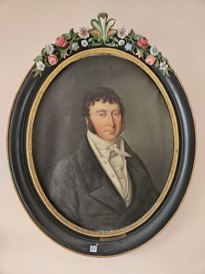

Louis Joseph Xavier WATTINNE — Né le 1785 — Décédé le 23/09/1840
Louis Joseph Xavier WATTINNE
Né le 1785
Décédé le 23/09/1840
Résumé
Louis Joseph Xavier Wattinne naît à Tourcoing le 2 mars 1785, fils de Pierre François Wattinne, architecte et maire de Tourcoing, et d'Euphroïsine de Wavrin. Il perd sa mère à vingt ans, son père à vingt-sept. En 1808, il épouse Augustine Angélique Dervaux, fille d'un négociant et banquier de Tourcoing. Dès 1810 — l'année même où naît son fils Louis Joseph — il fonde son établissement de négoce en laines à Tourcoing, rue de Gand. Sa fortune personnelle est estimée à 600 000 francs dès cette date, richesse considérable pour un homme de vingt-cinq ans, signe que l'établissement commercial était déjà solidement ancré dans les réseaux de la bourgeoisie lainière tourquennoise. Sa carrière civique est remarquable : adjoint au maire de Tourcoing en 1815, il devient membre de la Commission administrative des Hospices et Bureaux de Bienfaisance de 1823 à 1826, puis suppléant de la Justice de Paix du canton sud de Tourcoing. Augustine Dervaux meurt en 1825 après avoir mis au monde dix enfants. Louis Joseph Xavier ne se remarie pas. Il meurt le 23 septembre 1840 à Tourcoing, à 55 ans, juste après que son fils cadet Louis Joseph s'est installé à Roubaix avec sa jeune épouse Pauline Bossut.
Sources :
{kind=link}

{kind=link}
📷 Cliquez pour voir 2 photo(s)